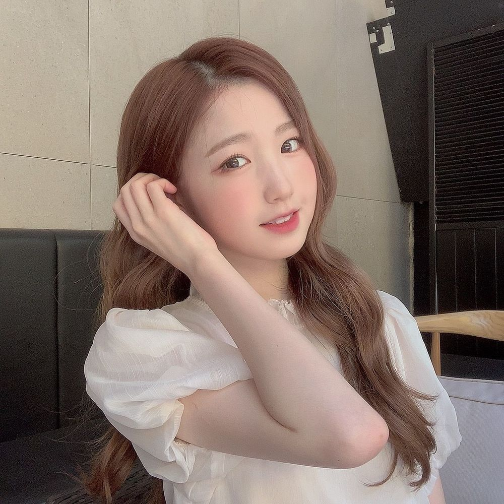
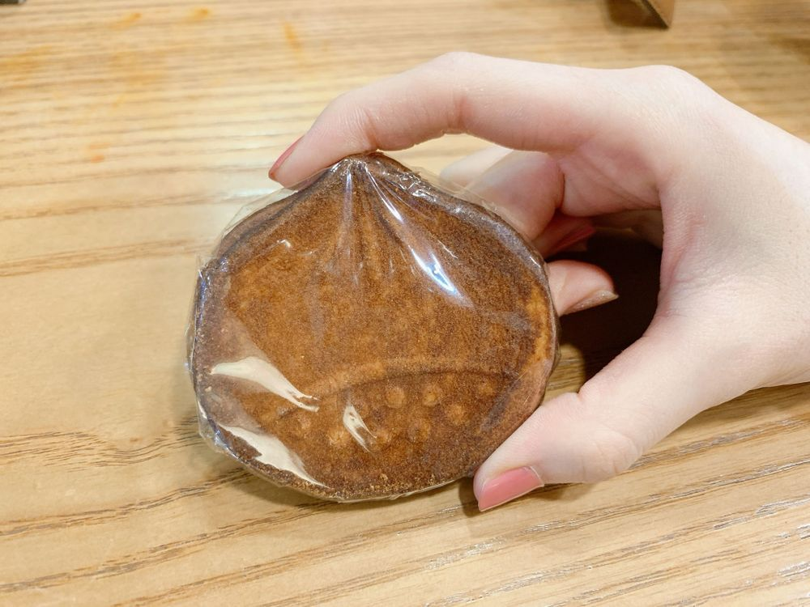

おはよう🌞
ひいだよ🍓

昨日はあのあと雨が降りました☔️
でも今は降ってないからよかった〜😊
そうそう！
この前メールに書いたけど
お母さんが送ってくれたひいが小さい頃に
好きだったお菓子を昨日食べました🥰
とっても懐かしい味だったなあ〜
ひいが好きなお菓子…
その名も栗煎餅🌰🍘
知ってる人少ないと思うけど。。
とっても美味しんだよ🥺🥺🥺
でもかなり硬め！！
正直栗の味はわからないけど…
小さい頃はよく食べてたので
これは思い出の味です☺️
이호も何か思い出の味とか
料理とかありますか？？
料理でいうと
お家のご飯はハンバーグ
外食系だとお寿司の穴子かな🍣
お母さんに
「今日の夕飯何がいい？」って聞かれたら
毎日のように「ハンバーグ！」って言ってた！
あとお寿司屋さん行ったら
穴子しか食べてなかった😅笑
初めてマグロ食べたのとか
最近だもん😳
今お寿司で好きなネタは
えんがわとか〜
イカとか〜
もちろん今も穴子好きだよ☺️🍣
ああ久しぶりにお寿司食べたくなってきた🙄
回転寿司のサイドメニューにある
明太マヨポテトが特に🍟笑
あ！
이호が回転寿司に行ったら頼むサイドメニュー
ぜひ教えてください🥺🥺🥺
ひいはアオサの味噌汁！！
ガリは一箱分くらい
本当にたくさん食べる🤭笑
ちょっと朝から
熱く語りすぎた😅
ではまたっ
어제 아이즈원츄 어땠오~??
자동차 극장 너무 재밌었고
기억에 남는 추억이 됐어요~!!!
빨리 위즈원 보고싶네ㅠㅠ
오늘의 TMI💡
내가 좋아하는 웨이브 했어!!!
아 머리 스타일!!!
그리고 나 요즘 반묶음보다 포니테일을 좋아졌어😳
근데 포니테일하면 스프레이 많이 쓰잖아??
그래서 샴푸할 때 조금 힘들어ㅎㅎㅎ
오늘의 추천메뉴는.... 새우버거🍔
어제 저녁에 인생 처음으로
롯데◯아의 새우버거를 먹었는데....
진짜 맛있더라구... ㅠㅠ
그래서 어제부터
내일은 추천메뉴로 해야겠다고 생각했었어ㅎㅎㅎ
치즈스틱도 필수🤗

これが栗煎餅🌰🍘
ばいばーい👋🏻
ひいまる🥟